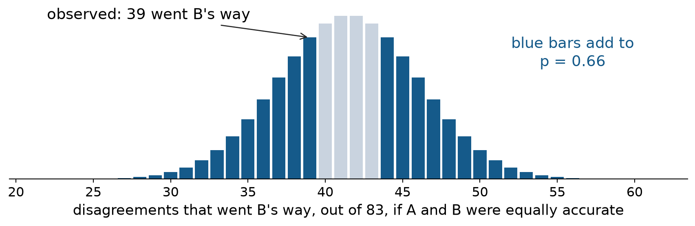
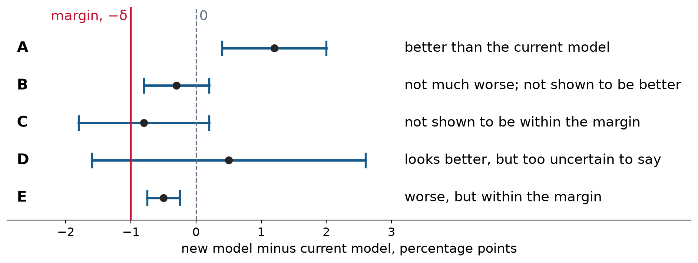

Comparing the accuracy of two models
| Model | Accuracy on 1,000 test questions |
|---|---|
| Model A | 86.4% |
| Model B | 85.9% |
In Week 4, each score had a standard error of about 1.1 points, so a 95% interval of about \pm 2.1 points. The 0.5-point gap was well inside that.
We left something out: both models answered the same 1,000 questions. Today we use that.
We will compare two models in three scenarios.
HW5 Problem 1 follows the same order: part (a) is the first scenario, part (b) the second, and part (c) the third. Part (d) comes Thursday.
Every difference today is model B minus model A, in percentage points.
| B right | B wrong | |
|---|---|---|
| A right | 820 | 44 |
| A wrong | 39 | 97 |
A answered 820 + 44 = 864 right (86.4%), and B answered 820 + 39 = 859 right (85.9%).
The 820 questions both got right and the 97 both got wrong count the same for both models, so they cancel: \widehat\Delta = \hat p_B - \hat p_A = \frac{n_{01} - n_{10}}{n} = \frac{39 - 44}{1000} = -0.5 \text{ points}.
All the evidence about which model is better is in the 83 questions where they disagree.
Week 3 previewed this table. Today we test it.
Let m = n_{10} + n_{01}, the number of disagreements. Here m = 83.
m is random, but it says how often the models differ, not which one is better. So McNemar’s test conditions on m and asks only how the 83 split.
If A and B are equally accurate, each disagreement is a fair coin toss: n_{01} \mid m \;\sim\; \operatorname{Binomial}\left(m, \tfrac12\right).
Discuss: what has to be true about the questions for this to be a binomial?
Holding the m = 83 disagreements fixed: if the models were equally accurate, how often would they split at least as unevenly as 39 to 44?

A split this uneven, in either direction, happens 66% of the time when the models are equally good. No evidence that either model is more accurate.
A different setting with the same math. In a head-to-head vote, 400 people each read two chatbots’ answers to the same prompt and pick the better one. 223 pick B.
If the chatbots are equally good, the number picking B is X \sim \operatorname{Binomial}(400, \tfrac12), with
\text{mean} = \frac{m}{2} = 200, \qquad \text{SD} = \sqrt{m \cdot \tfrac12 \cdot \tfrac12} = \frac{\sqrt m}{2} = 10.
For large m the binomial is close to normal, so
z = \frac{X - m/2}{\sqrt m / 2} = \frac{223 - 200}{10} = 2.3, \qquad \text{two-sided } p \approx 0.02.
The exact binomial p-value is 0.024.
HW5 1(a) asks you to do the same for McNemar’s test and simplify the result.
Two models disagree on m = 50 questions. B wins 32 of them and A wins 18. Compute z. Is the difference significant at the 5% level?
If the models were equally good, B would win m/2 = 25 on average, with SD \sqrt{m}/2 = 3.54: z = \frac{32 - 25}{3.54} = 1.98, \qquad p \approx 0.048.
The exact binomial p-value is 0.065. With only 50 disagreements the normal shortcut is a little optimistic, and the two land on opposite sides of 0.05. When the counts are small, report the exact test.
McNemar’s test says whether the difference is real. The team also wants to know how big it is and which model it favors. That takes an interval.
Each question gives one difference, D_i = B_i - A_i: +1 if only B is right, -1 if only A is right, and 0 otherwise. The estimate \widehat\Delta is the average of the D_i, so \operatorname{SE}(\widehat\Delta) = \frac{s_D}{\sqrt n} = 0.9 \text{ points}.
The 95% interval is -0.5 \pm 1.96(0.9), or [−2.3, 1.3] points. It includes 0, so we cannot tell which model is better: either could be ahead by up to about 2 points. That answers Week 4’s question.
From Week 3, \operatorname{Var}(D_i) = \operatorname{Var}(A_i) + \operatorname{Var}(B_i) - 2\operatorname{Cov}(A_i, B_i).
Easy questions are easy for both models. Here the correlation between A’s and B’s results is 0.65, so the covariance term is large, and subtracting it makes the variance small.
| Standard error of B − A | 95% interval | |
|---|---|---|
| Unpaired, as if the questions differed | 1.5 points | [−3.5, 2.5] |
| Paired, s_D / \sqrt n | 0.9 points | [−2.3, 1.3] |
Pairing makes the interval 1.7 times narrower.
Each D_i is −1, 0, or +1, so s_D^2 \approx (n_{10} + n_{01})/n - \widehat\Delta^2. The more often the models disagree, the larger the paired standard error.
The coin-toss argument treats the 83 disagreements as 83 independent tosses.
Benchmarks often break that. Questions come in groups, like Week 4’s camera bursts and reading passages. If a whole group of questions tilts toward one model, its disagreements are not separate tosses, and:
On Thursday you will check this on a real benchmark, with a bootstrap that resamples whole groups of questions.
Then there are no pairs and no disagreements to count. Each model has only a count of right and wrong answers.
With large samples, use the unpaired standard error from the last table. With small samples, use Fisher’s exact test.
A colleague of R. A. Fisher said she could taste whether the milk had been poured before the tea. Fisher’s test: 8 cups, 4 milk-first and 4 tea-first, in random order. She knows there are 4 of each, and picks the 4 she thinks are milk-first.
If she is guessing, her 4 picks are a random 4 of the 8 cups. The number of milk-first cups among her picks, X, has the hypergeometric distribution: P(X = x) = \frac{\binom{4}{x}\binom{4}{4-x}}{\binom{8}{4}}, \qquad \binom{8}{4} = 70.
Fisher (1935), The Design of Experiments, Chapter 2. Hypergeometric means drawing without replacement.
A pilot gives model A 12 questions and model B 12 different questions from the same task.
| Right | Wrong | Total | |
|---|---|---|---|
| A | 11 | 1 | 12 |
| B | 7 | 5 | 12 |
| Total | 18 | 6 | 24 |
If A and B are equally accurate, then given that 18 of the 24 questions were answered right, which 12 questions went to A is like drawing 12 of the 24 at random. The number A got right is hypergeometric: P(X = x) = \frac{\binom{18}{x}\binom{6}{12-x}}{\binom{24}{12}}, \qquad P(X \ge 11) = 0.071 + 0.007 = 0.077.
92% versus 58% looks like a big gap, but 24 questions cannot show it.
| Same questions | Different questions | |
|---|---|---|
| The evidence | the disagreements | each model’s right and wrong counts |
| Exact test | McNemar’s: holds the number of disagreements fixed | Fisher’s: holds each model’s number of questions and the total right fixed |
| Large samples | paired standard error, s_D / \sqrt n | unpaired standard error |
A new model beats the current one by 0.4 points (95% interval [0.2, 0.6]) on 50,000 questions.
A new model beats the current one by 3 points (95% interval [−1, 7]) on 400 questions.
The first is statistically significant and may be too small to matter. The second is not significant and might matter a lot.
Whether a difference matters depends on the decision: what switching costs, and what an error costs. Decide what size matters before looking at the results.
In drug trials, a new treatment that is cheaper, safer, or easier to take, such as a pill instead of an injection, does not need to beat the standard treatment. It needs to be not much worse. This is a non-inferiority trial.
AI teams face the same question:
The margin \delta is how much accuracy the team will give up for the savings. It is a decision, set in advance, not something estimated from the data.
A trial compares a new pill with a standard injection. Let \Delta be the pill’s cure rate minus the injection’s, and let the margin be \delta = 5 points.
H_0: \Delta \le -\delta \quad \text{(the pill is worse by at least 5 points)} H_1: \Delta > -\delta \quad \text{(the pill is worse by less than 5 points, or better)}
The null hypothesis is that the new treatment is too much worse, and the data have to show otherwise.
Suppose we test H_0: \Delta = 0 instead, and switch to the pill whenever we cannot reject it. What could go wrong?
With 20 patients per arm, the pill cures 14 (70%) and the injection cures 17 (85%). So \widehat\Delta = -15 points, with \text{SE} = \sqrt{0.70(0.30)/20 + 0.85(0.15)/20} = 13 points.
| “No difference” test | Non-inferiority test | |
|---|---|---|
| Hypotheses | H_0: \Delta = 0 vs. H_1: \Delta \ne 0 | H_0: \Delta \le -5 vs. H_1: \Delta > -5 |
| Result | Fisher’s exact test: p = 0.45 | z = (-15 + 5)/13 = -0.77, p = 0.78 |
| Decision | cannot reject, so switch to the pill | cannot reject, so keep the injection |
A small, noisy trial almost never rejects “no difference,” so the first rule lets almost any treatment through. Failing to find a difference is not evidence that there is none.
A z test. Like any z statistic, z = (\text{estimate} - \text{null value}) / \text{SE}, with the null value at the edge of H_0: z = \frac{\widehat\Delta + \delta}{\text{SE}}. Reject H_0 when z > 1.645: one-sided, at the 5% level.
A lower bound. The one-sided 95% lower bound is \widehat\Delta - 1.645\,\text{SE}: we are about 95% confident the true difference is above it. Reject H_0 when the bound is above -\delta.
The two always agree.
HW5 1(c)(ii) asks you to show why.
On 2,000 questions, the smaller model minus the current one is \widehat\Delta = -0.4 points, with SE = 0.3. The margin is \delta = 1 point.
Shown to be non-inferior.
The two-sided 95% interval, [-0.99, 0.19], includes 0. So the models are not shown to differ either.
“Not shown to differ” and “shown to be not much worse” are different claims. Only the second supports switching.

Each dot is \widehat\Delta, and each bar runs from the one-sided 95% lower bound to the upper bound. Left end above -\delta: not much worse. Right end below 0: shown worse.
The new model looks better: \widehat\Delta = +0.2 points, SE = 0.8, margin \delta = 1 point. Is it shown to be non-inferior?
The lower bound is 0.2 - 1.645(0.8) = -1.12, below -1. No. With this much uncertainty the new model could be more than 1 point worse. This is row D.
The standard error shrinks like 1/\sqrt n.
Example. On 1,500 questions, \widehat\Delta = -0.5 points and SE = 0.4, with margin \delta = 1. The lower bound is -0.5 - 1.645(0.4) = -1.16: not shown.
If the gap stayed at -0.5, the bound would pass when -0.5 - 1.645\,\text{SE} > -1 \quad\Longleftrightarrow\quad \text{SE} < \frac{0.5}{1.645} = 0.30.
With \text{SE} = 0.4\sqrt{1500/n}, that needs n > 1500 \left(\frac{0.4}{0.30}\right)^2 \approx 2{,}600 \text{ questions.}
After seeing a lower bound of -1.16, it is tempting to decide that a 1.5-point margin is fine.
A margin chosen after seeing the bound can always be made to pass. So write down the margin, and the reason for it, before running the comparison: what the team gains by switching, and how much accuracy that is worth.
This is Week 3’s locked evaluation plan again.
A shop checks its scale once a year against last year’s scale, and keeps it if the two agree within half an ounce.
Every year, the scale passes. After four years, how far could it be from the original?
Up to 2 ounces. Each check compares against the previous scale, not the original, so small allowed errors can pile up in one direction.
HW5 1(c)(v) asks what this means for a series of model versions.
Thursday: benchmark questions come in tasks, so are the disagreements really independent? Picking the best of several tries overstates it, and accuracy is not the only cost. Then Lab 5 on BIG-Bench Hard.
HW5 is out today and due Tue Feb 23.
Reading: Miller (2024), “Adding Error Bars to Evals”, Section 4: comparing models, unpaired and paired.
Optional: